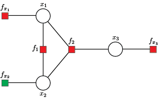

Output Data
The main inference results are kept in the composite type GraphicalModel in the subtype Inference with fields:
fromFactor,toVariablemeanFactorVariable,varianceFactorVariable,fromVariabletoFactormeanVariableFactor,varianceVariableFactor,mean,variance.
The values of messages from factor nodes to variable nodes can be accessed using meanFactorVariable and varianceFactorVariable fields, while values of messages from variable nodes to factor nodes are stored in meanVariableFactor and varianceVariableFactor fields. These values correspond to edges defined by factor and variable nodes, with indexes preserved in fromFactor - toVariable and fromVariable - toFactor fields.
Fields mean and variance define state variable marginal distributions.
The Inference field contains the GBP algorithm results. To describe the outputs, we will use the example shown below.
using GaussBP
# x1 x2 x3
H = [1.0 0.0 0.0; # f1
2.0 -2.0 0.0; # f2
-5.0 -4.0 9.0; # f3
0.0 0.0 1.0] # f4
# f1 f2 f3 f4
z = [0.0; 1.7; 1.9; 0.2]
# f1 f2 f3 f4
v = [1e-10; 0.1; 0.1; 1e-2]The factor graph construction and message initialization is accomplished using graphicalModel() function.
gbp = graphicalModel(H, z, v)Factor graph
The first step in solving/analysing the above system/system of equations is forming a factor graph, where set of variable nodes $\mathcal{X} = \{x_1, x_2, x_3 \}$ is defined by state variables. The set of equations denotes the set of factor nodes $\mathcal{F} = \{f_1, f_2, f_3, f_4 \}$.
Additionaly, we include the virtual factor node $f_{v_1}$, where factor node $f_{v_1}$ is a singly connected factor node used when the variable node is not directly measured, hence having variance $v_{x_1} \to \infty$ or a priori given mean and variance of state variables. To change defualt values of virtual factor nodes use:
gbp = graphicalModel(H, z, v; mean = 0.1, variance = 1e60)Messages initialization
The initialization step starts with messages from local factor nodes $\{f_1, f_{v_1}, f_4 \}$ to variable nodes $\mathcal{X}$. Then, variable nodes $\mathcal{X}$ forward the incoming messages received from local factor nodes along remaining edges defined by $\{f_2, f_3\}$ and $\mathcal{X}$.
Messages from factor nodes to variable nodes
The GBP iterations computing messages from indirect factor nodes $\{f_2, f_3\}$ to variable nodes $\mathcal{X}$, using incoming messages from variable nodes $\mathcal{X}$ to indirect factor nodes $\{f_2, f_3\}$ obtained in the previus step.
messageFactorVariableVanilla(gbp)
julia> T = gbp.inference
julia> [T.fromFactor T.toVariable T.meanFactorVariable T.varianceFactorVariable]
5×4 Matrix{Float64}:
2.0 1.0 0.95 1.0e60
3.0 1.0 -0.1 6.4e59
2.0 2.0 -0.85 0.025
3.0 2.0 -0.025 0.056875
3.0 3.0 0.255556 1.97531e59The first row defines the message from factor node $f_2$ to variable node $x_1$, the second row keeps the message from factor node $f_3$ to variable node $x_1$, etc.
Messages from variable nodes to factor nodes
Next, the algorithm proceeds with computing messages from variable nodes $\mathcal{X}$ to indirect factor nodes $\{f_1, f_2\}$, using incoming messages from factor nodes $\mathcal{F}$ to variable nodes $\mathcal{X}$.
messageVariableFactorVanilla(gbp)
julia> T = gbp.inference
julia> [T.fromVariable T.toFactor T.meanVariableFactor T.varianceVariableFactor]
5×4 Matrix{Float64}:
1.0 2.0 -1.5625e-71 1.0e-10
2.0 2.0 -0.025 0.056875
1.0 3.0 9.5e-71 1.0e-10
2.0 3.0 -0.85 0.025
3.0 3.0 0.2 0.01The first row defines the message from variable node $x_1$ to factor node $f_2$, the second row keeps the message from variable node $x_2$ to factor node $f_2$, etc.
Marginals
The marginal of variable nodes $\mathcal{X}$ can be obtained using messages from factor nodes $\mathcal{F}$ to variable nodes $\mathcal{X}$. Note that the mean value of marginal is adopted as the estimated value of the state variable. Thus, after 100 iterations, we obtain:
marginal(gbp)
julia> [gbp.inference.mean gbp.inference.variance]
3×2 Matrix{Float64}:
2.26718e-9 1.0e-10
-0.598092 0.0173664
-0.0267176 0.00381679Where rows correspond with mean and variance values of the state variables $\{x_1, x_2, x_3 \}$.